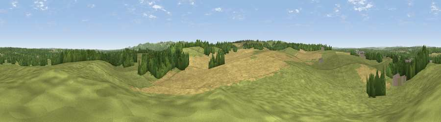

Viewpoint near Wool
#27508 in England · top 57% of its area beats it · near Wool · access?Where it is
The exact computed spot (SY 84825 85725). Click the marker for map links.
Public access: no public right of way or access land is recorded at this exact spot — it may be on private land. Computed from Natural England's CRoW access layer and OpenStreetMap rights of way — not the legal definitive map. Always verify locally.
The view, rendered

A 360° render of this exact spot computed from the terrain model, tree cover and land cover — summer colours, afternoon light, calibrated against photographs of famous viewpoints. Real trees, hedges and buildings will differ in detail.
The panorama
Grey silhouette: terrain skyline in each direction (720 bearings, Earth curvature and refraction included). Dashed green: skyline with trees (+15 m) and buildings (+8 m) as obstacles. Blue strip: how far the ground is visible on each bearing.
Where the view opens
Wedge length = distance to the farthest visible ground on that bearing (vegetation-aware). Rings at 10, 25 and 50 km.
What fills the view
58% grassland · 27% cropland · 15% woodland · 1% built-up
Angular shares of the visible panorama (visual magnitude), not map area. Landscape diversity 0.44 (0–1 Shannon).
Key numbers
More beautiful places nearby
The staircase of upgrades: each row has a higher view potential than everything closer. Driving times are estimates from straight-line distance, calibrated against real road routing — check an actual route before setting out.
| Place | Direction | Drive | Score |
|---|---|---|---|
| Viewpoint near East Knighton | W · 4 km | ~10 min | 43.5 |
| Rings Hill | SSE · 5 km | ~12 min | 87.5 |
| Viewpoint near Abbotsbury | W · 29 km | ~45 min | 89.0 |
| Viewpoint near West Bexington | W · 30 km | ~47 min | 89.5 |
| The Knoll | W · 31 km | ~49 min | 91.0 |
50.67099, -2.21610 · source: screening · position refined by local search. Computed location — check access rights before visiting.